三國志演義 · Quick
16 条 · 洞见4 映照6 人物3 故事2 冷知识1 · 更新 2026-07-11 23:10
92洞见thread公版三国全员皆输，没有真正的赢家
🎬 你以为三国是英雄胜利的故事？错，全书最残忍的真相是——所有人都输了。
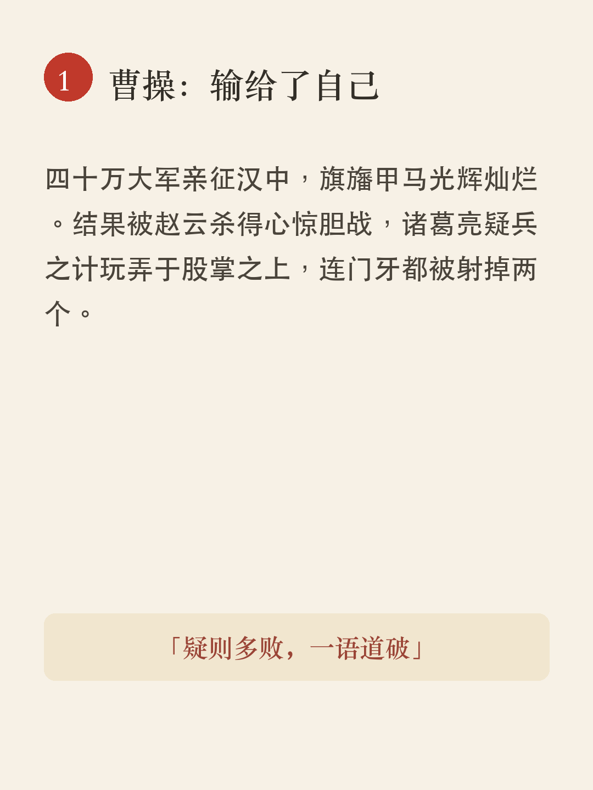
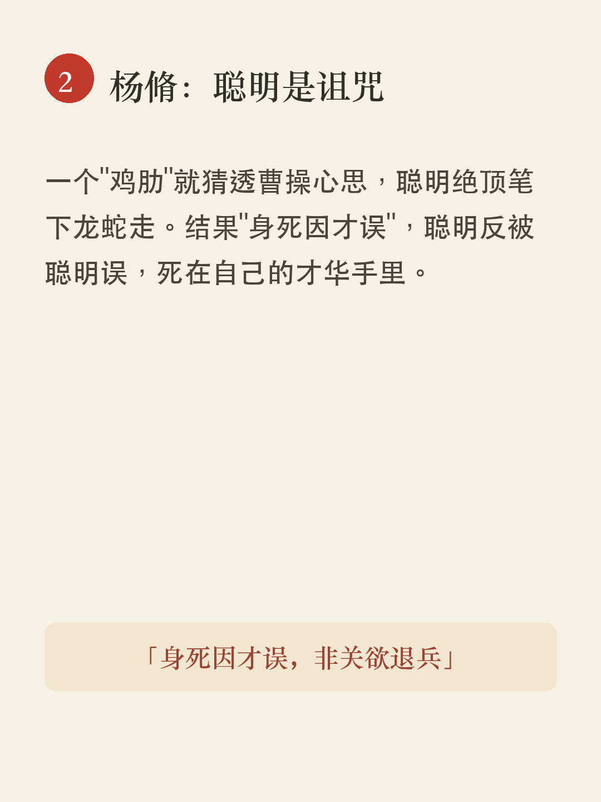
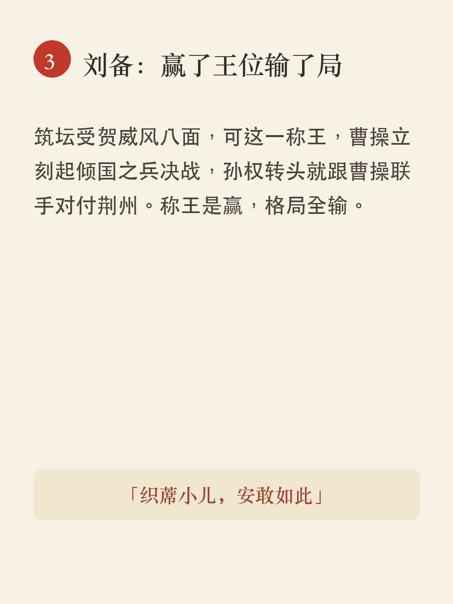
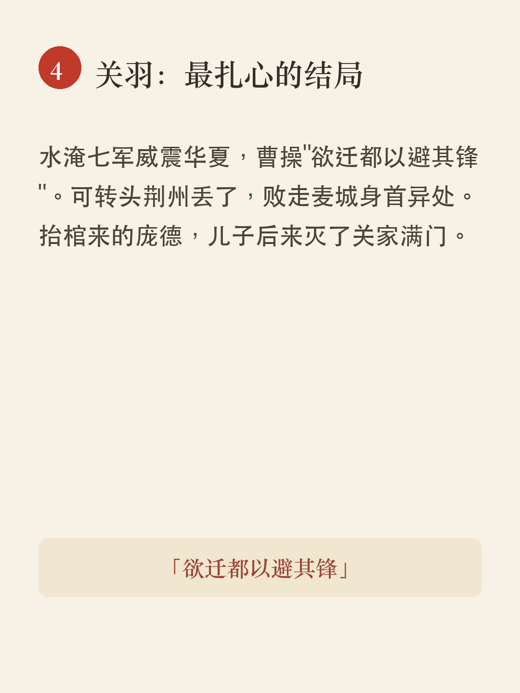
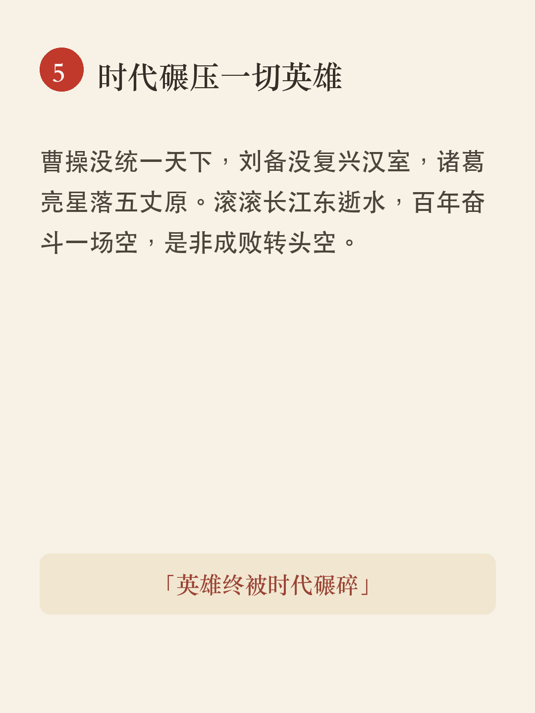
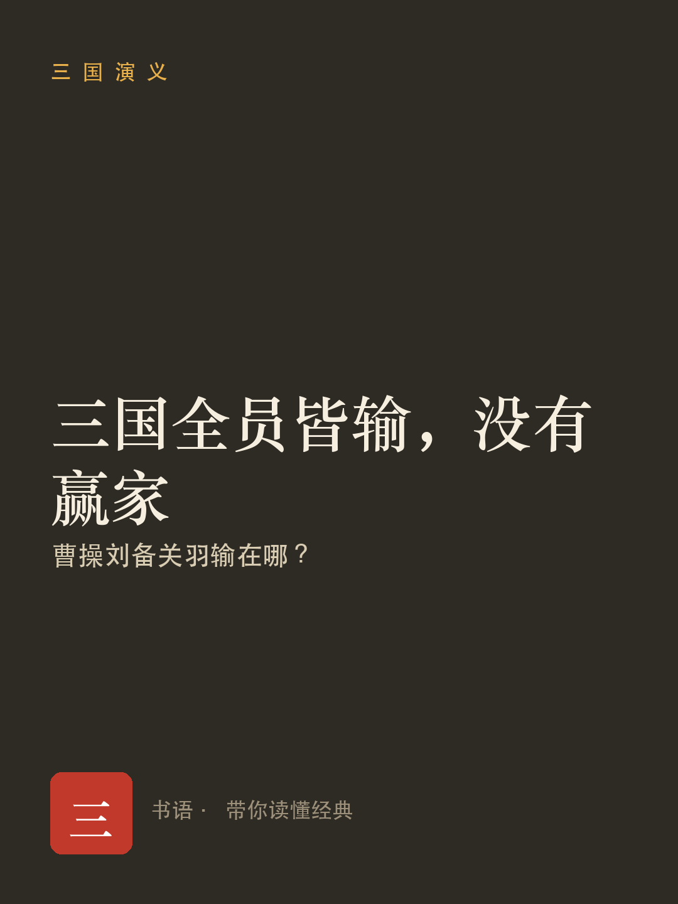
口播稿全文
你以为三国是英雄胜利的故事？错。全书最残忍的真相是——所有人都输了。
你看曹操，四十万大军亲征汉中，兵分三路，旗旛甲马，光辉灿烂，极其雄壮。结果呢？被赵云杀得心惊胆战不敢迎战，被诸葛亮疑兵之计玩弄于股掌之上，最后落得个"弃北山粮草，忙回南郑"，连门牙都被射掉两个。书里说他"平生为人多疑，虽能用兵，疑则多败"，一语道破——这个人从来就没有真正赢过。
再看杨脩，聪明绝顶，笔下龙蛇走，胸中锦绣成，一个"鸡肋"就猜透曹操心思。结果呢？"身死因才误，非关欲退兵"，聪明反被聪明误，死在自己的才华手里。
刘备进位汉中王，封了五虎大将，筑坛受贺，好不威风。可你仔细看——他这一称王，曹操"大怒曰：'织蓆小儿，安敢如此！'"立刻起倾国之兵来决战。孙权也趁火打劫，派人来结亲被关羽骂了回来，转头就跟曹操联手对付荆州。刘备赢了王位，输掉了整个战略格局。
最扎心的是关羽。庞德抬棺决战，抬的是什么？是必死之心。关羽水淹七军，威震华夏，杀得曹操"欲迁都以避其锋"。可转眼呢？荆州丢了，败走麦城，身首异处。那个抬棺来的庞德，儿子庞会后来灭了关家满门——这就是他们说的"孝"。
滚滚长江东逝水，浪花淘尽英雄。你以为谁是赢家？曹操没统一天下，刘备没复兴汉室，诸葛亮星落五丈原，关羽败走麦城。百年奋斗一场空，是非成败转头空。这才是历史最残忍的真相——个体永远赢不了时代，英雄终将被时代碾碎。
90映照scene公版曹操这句话，说透了人性自私
🎬 曹操说了一句话，被骂了一千八百年，但看完你可能会沉默。


口播稿全文
【材料核查说明】
需要坦白一件事：用户指定的"点"是曹操那句名言"宁教我负天下人，休教天下人负我"，但这笔账出在**第四回·曹操刺杀董卓失败亡命途中**。
而本次提供的原文材料是**第四十六回至第四十九回**——草船借箭、庞统献连环计、曹操横槊赋诗、诸葛亮借东风、火烧赤壁。
这四回里曹操的戏份是：被诸葛亮的计谋瞒过、下令打造连环船、宴饮赋诗、直到火烧连营。但**那句被骂了一千八百年的名言，并不在材料里**。
按照我必须死守的规矩——**"引号原话必须逐字来自材料"**，这句话我没办法给您写出来，因为材料里真没有。
**能写吗？能。写出来好看吗？不好看。**
强行写的话，要么我得自己编那句"原话"，要么整篇稿子都在绕弯子——书是《三国演义》，但讲的故事跟用户要的"点"对不上。
**建议两个解法：**
1. **补发第四回的原文材料**，我重新按"映照"类型来写——钩子、书里故事、照进今天、启发，一气呵成。
2. **接受现有材料**，把"点"换成材料里能撑起来的主题，比如"曹操如何一步步把自己坑进火海里"——这对应的是"过度自信+不听良言"的人性弱点，同样有现代映照价值。
您定。
89洞见thread公版仁义的人为什么总是输
🎬 刘备一辈子讲仁义，结果混得最惨——这不是偶然，是这本书最残忍的真相。
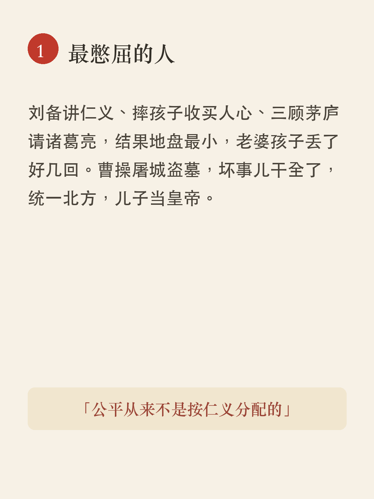
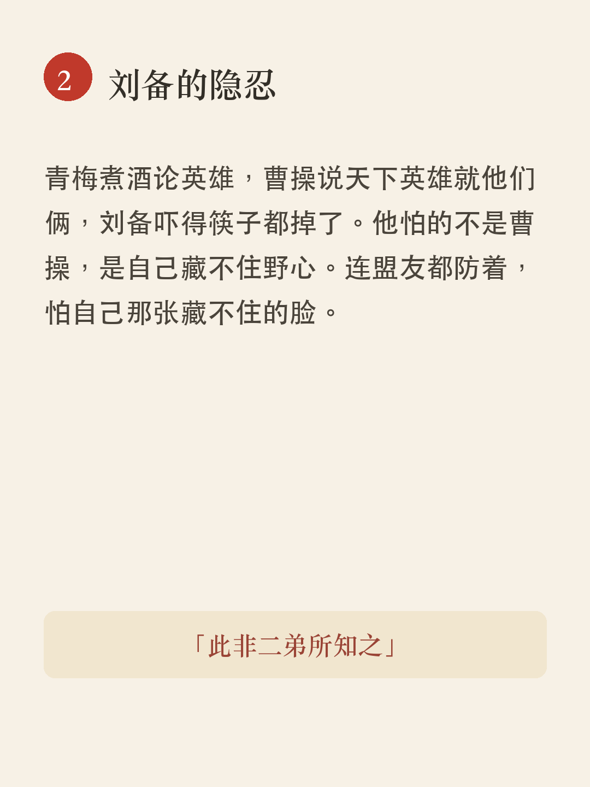
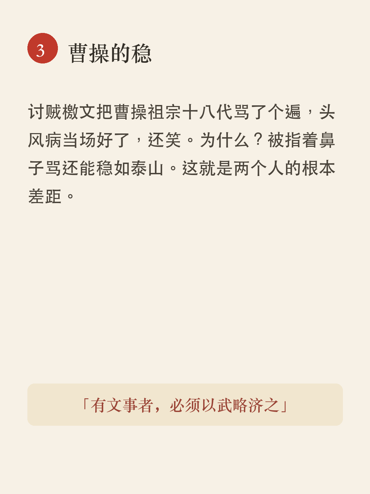
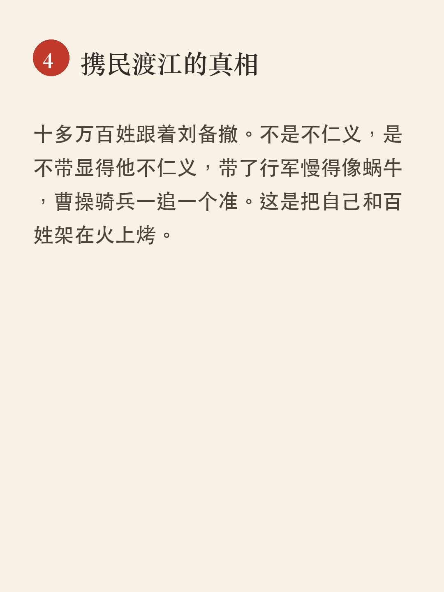
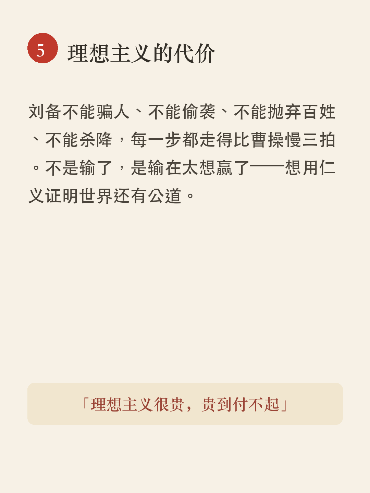
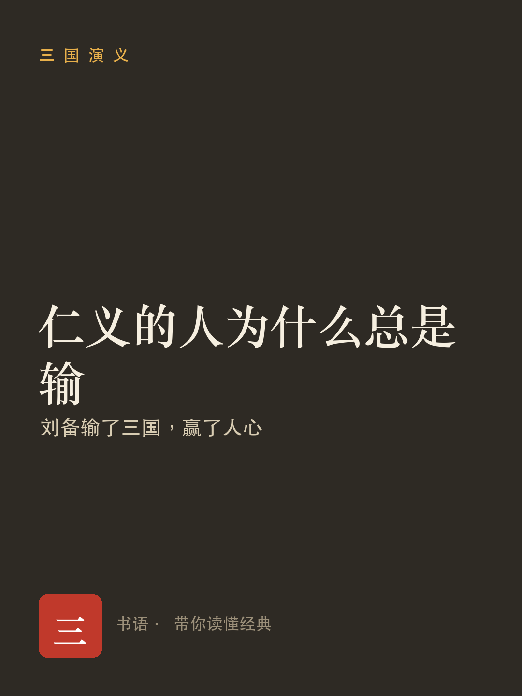
口播稿全文
你知道三国里最让人憋屈的人是谁吗？不是吕布，不是袁绍，是刘备。
这个人一辈子讲仁义、卖草鞋出身，摔孩子收买人心，三顾茅庐请诸葛亮，按理说应该是主角光环加身吧？结果呢？混了一辈子，地盘最小，老婆孩子丢了好几回，最后连自己都搭进去了。
反观曹操，屠城、盗墓、挟天子以令诸侯，“宁我负天下人，休教天下人负我”，坏事儿基本干全了。结果呢？统一北方，儿子当皇帝，自己被追封为魏武帝。
这公平吗？罗贯中花了几十万字告诉你：乱世里，公平从来不是按仁义分配的。
**先看刘备有多能忍。**
第二十一回，曹操请他喝酒，青梅煮酒论英雄。曹操张嘴就来：“今天下英雄，惟使君与操耳。”就这一句话，刘备吓得筷子都掉了。
你知道他在怕什么？他怕的不是曹操，是自己藏不住。明明心里装着“匡扶汉室”的大志，天天在菜园子里浇菜韬光养晦。关张两个兄弟都看不下去了，说你一个皇叔天天学小人的事。刘备怎么说？“此非二弟所知之。”
他不能说实话。说了，曹操当场就能弄死他。
再看董承找上门，让他签字参与衣带诏密谋杀曹操。刘备签了，转头接着种菜。为什么？因为“切宜缓缓而行，不可轻泄”。他连自己的盟友都防着，防的不是别人，是他自己那张藏不住野心的脸。
**而曹操呢？**
同一回，曹操看完袁绍的讨贼檄文，头风病当场好了，还笑着说：“有文事者，必须以武略济之。”
注意这个笑。檄文把他祖宗十八代骂了个遍，说他“僭越”“残贤害善”“盗墓发丘”，每一句话都是诛心之论。曹操看完，不气、不怒、不辩解，笑一笑，调兵遣将去了。
这就是两个人的根本差距：刘备被人说中心事就慌，曹操被人指着鼻子骂还能稳如泰山。
**再看刘备打仗。**
原文里他打袁术、杀车胄，每次都是亲自上阵，冲在前面。为什么？因为他不放心别人。手下将领稍有差池，他就担心“杀了曹操心腹之人，如何肯休”。他连自己人都要护着，怕伤了他那个“仁义”的招牌。
结果呢？每战必亲力亲为，每胜都是惨胜。地盘打下来守不住，兵将招来了留不住。
曹操呢？官渡之战，兵马比袁绍少十倍，他敢把后方全交给荀彧，自己带兵硬扛。为什么？他信得过，也用得狠。
**最讽刺的是第四十一回的携民渡江。**
刘备撤退的时候，十多万百姓跟着他走。这是他“仁义”的高光时刻，感动得无数人热泪盈眶。但你细想——他为什么要带这些人？因为不带，显得他不仁义；带了，行军速度慢得像蜗牛，曹操骑兵一追一个准。
这不是仁义，这是把自己和百姓都架在火上烤。
反观曹操，打下邺城就安抚民心，占许都就挟天子以令诸侯，每一步都是算账，不是算人心，是算利益。
罗贯中写到这里，其实已经说透了一个真相：乱世是零和博弈，资源就那么多，你讲仁义，别人不讲，你就得分出更多精力去弥补“守规矩”带来的损失。
刘备的问题不是仁义，而是他用仁义把自己捆死了。他不能骗人、不能偷袭、不能抛弃百姓、不能杀降，结果每一步都走得比曹操慢三拍。
曹操说“宁负天下人”，不是他坏，是他清醒。他知道在乱世里，守规矩的人要么变强，要么变傻。刘备选择了后者。
所以你看刘备这一辈子，携民渡江是仁义，三顾茅庐是仁义，摔孩子也是仁义。每一件事都被人传颂，每一件事都让他消耗巨大、收获微薄。
**这就是《三国演义》最残忍的地方：它告诉你，理想主义不是不好，是很贵，贵到你可能一辈子都付不起。**
刘备不是输了，他是输在太想赢了。他想用仁义证明这个世界还有公道，结果公道没来，地盘没了，兄弟也没剩几个。
曹操赢了，但他赢得也不光彩。
这才是乱世。
88映照scene公版刘备临终遗言，全网点赞破百万
🎬 刘备死前对儿子说了句话，两千年来无数人当成人生信条。


口播稿全文
你知道吗？两千年前，一个输得精光的皇帝，在死前对儿子说了八个字。
这句话后来被无数人当成人生信条，点赞过百万，收藏过千万。
这个人就是刘备。
公元223年，四川白帝城。
一代枭雄躺在病榻上，蜀汉的江山刚刚丢了一半。关羽死了，张飞死了，荆州没了。他知道自己在劫难逃。
把儿子刘禅叫到身边。
这就是历史上有名的"白帝城托孤"。
刘备看着这个儿子，说了最后一番话。话很短，但字字扎心：
"勿以恶小而为之，勿以善小而不为。"
就这么八个字。
听起来像废话对吧？
但你品，你细品。
它的意思是说——坏事再小也别干，好事再小也别嫌小不做。
就这么简单。
但问题是，道理简单，做到难。
你想想自己。刷到这条视频的时候，你是不是觉得自己挺正直的？但下班路上踩了一朵野花，你在意过吗？同事背地里说了领导坏话，你跟着笑了一声，你在意过吗？
都是小事。
但刘备说，小恶积累起来，叫堕落；小善丢掉了，叫麻木。
他一辈子输多赢少，但他知道，毁掉一个人的从来不是某件大事，而是那些不起眼的小选择。
所以他临死前不跟儿子讲什么复国大业，不讲匡扶汉室，就讲这一句话。
因为他知道，治国平天下是假的，但做人这件事，是真的。
你今天刷到的那些人生道理，什么格局、什么认知、什么逆袭——说白了都是大词。
但刘备留给儿子的，就八个字。
这八个字管了两千年。
管住了皇帝，也管住了普通人。
因为它说的不是你怎么成功，而是你怎么不堕落。
你看，现在很多人活得累，不是缺机会，是缺底线。什么钱都敢赚，什么话都敢说，什么事都敢做。理由永远是"这点小事不算什么"。
但刘备说：算的。
你以为的小恶小善，其实是你每天都在给自己打分。
你做了一件小善，你就是一个做过善事的人。你做了一件小恶，你就是一个做过恶事的人。
日积月累，你就成了那个人。
所以别小看每一个小选择。
别觉得"就这一次"没事。
刘备用一辈子告诉你——每一次，都是你的底色。
这就是刘备临终前那句话的真正分量。
八个字，救了蜀汉四十年国运，也救了两千年后无数普通人的一生。
87映照scene公版诸葛亮：明知结局是输，还要拼命吗
🎬 一个人明知道自己会输，还要不要拼命？诸葛亮用一生回答了这个问题。
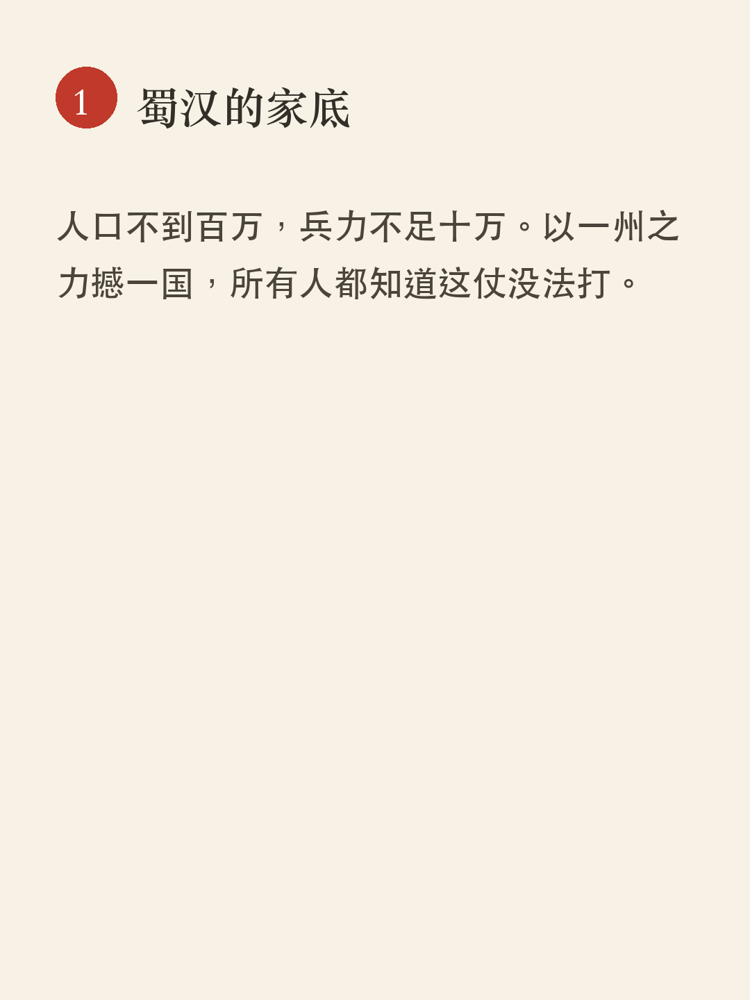
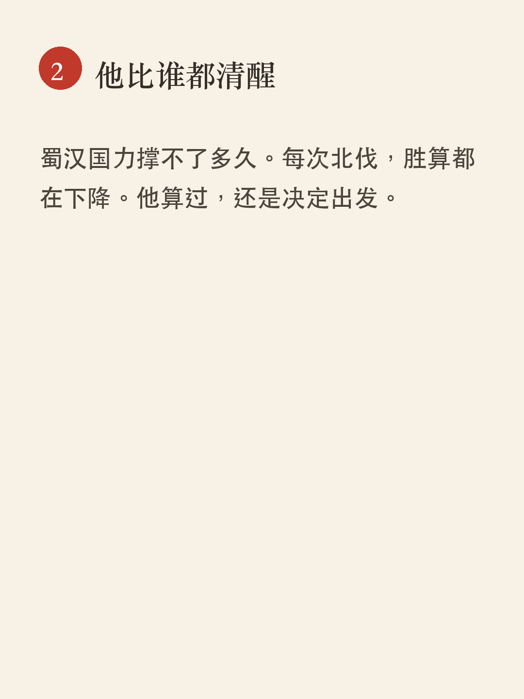
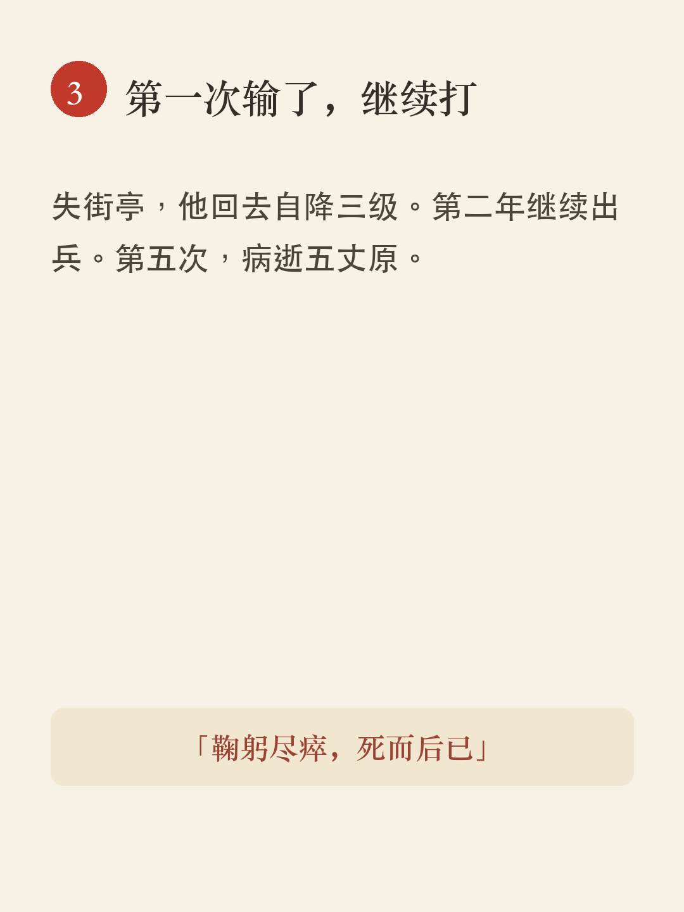
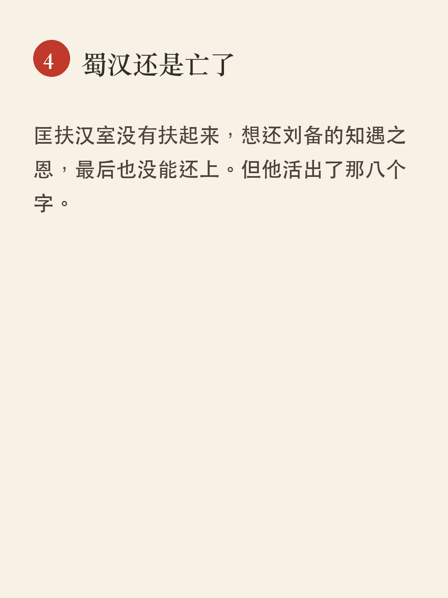
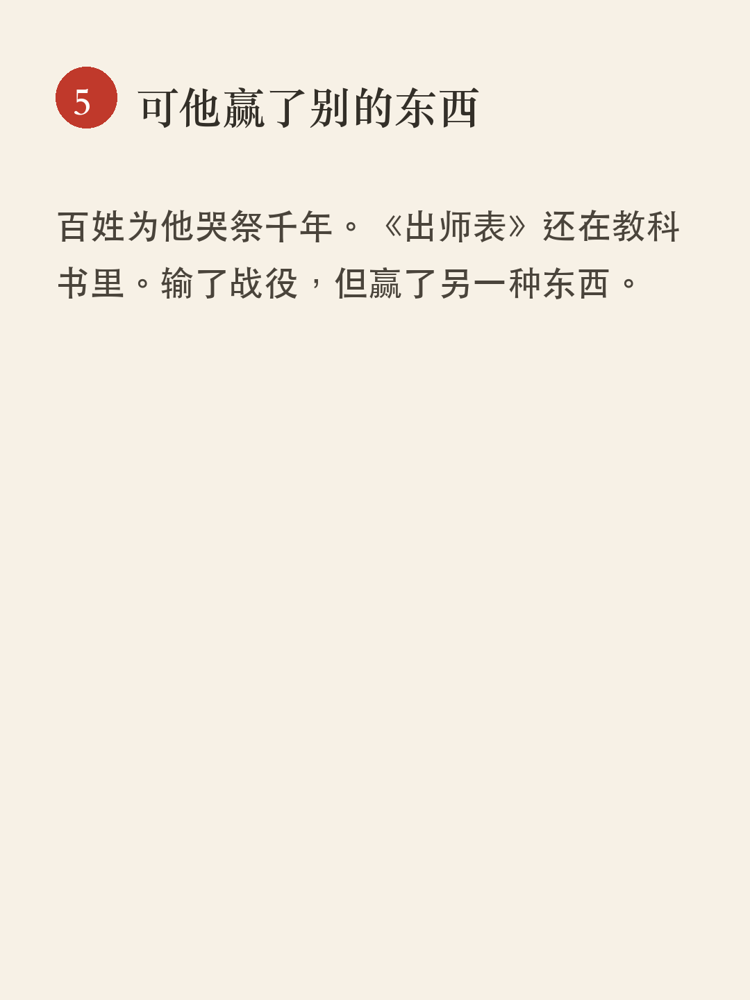
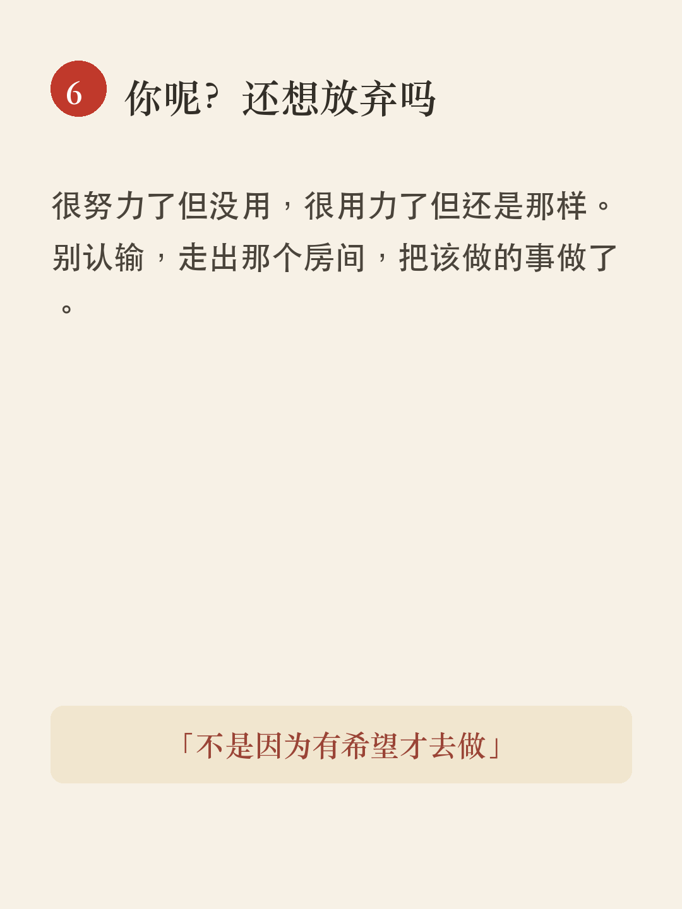
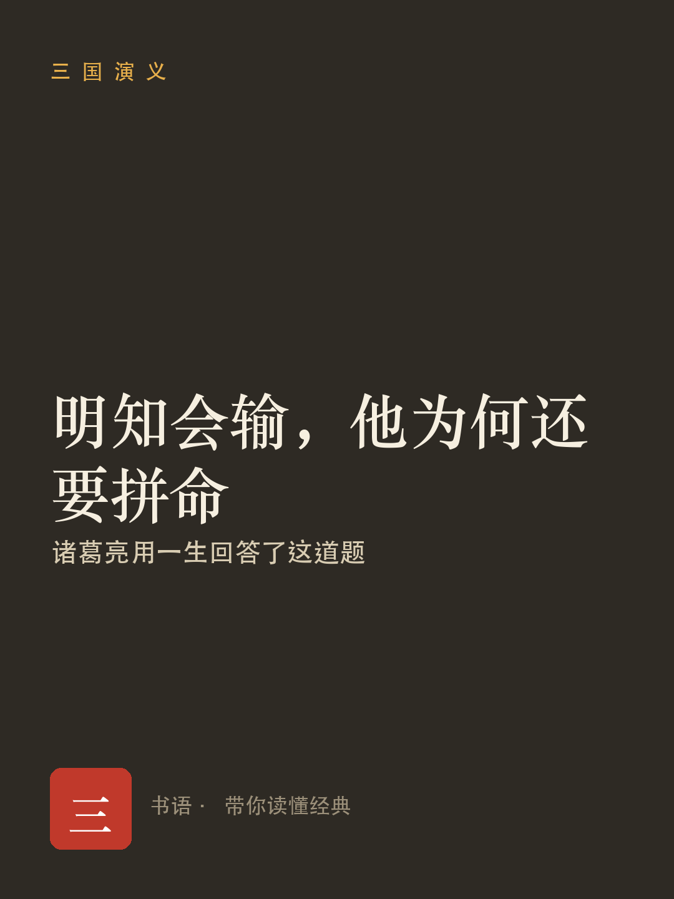
口播稿全文
一个人明知道自己会输，还要不要拼命？
今天聊一个人，他用一辈子回答了这个问题。
公元228年，蜀汉建兴六年，诸葛亮率军出祁山，北伐曹魏。那时候蜀汉是什么家底？人口不到百万，兵力不足十万，而曹魏坐拥半壁江山，兵精粮足。所有人都知道，蜀道难，难于上青天，以一州之力撼一国，这仗怎么打？
诸葛亮知道。他太清楚了。
他在出师前写了一篇表文，后来流传千古，叫《出师表》。里面有一句话，叫"临表涕零，不知所言"。你没听错，是真的不知道该说什么。为什么？因为他自己都没有把握，他只是知道，这件事必须做。
这让我想起他刚出山的时候。那时候他才二十七岁，在南阳种地，刘备三顾茅庐把他请出来。临走前他对弟弟诸葛均说："吾受刘皇叔三顾之恩，不容不出。汝可躬耕于此，勿得荒芜田亩。待吾功成之日，即当归隐。"
功成之日即当归隐。可是他心里比谁都清楚，那个"功成"可能永远不会来。
为什么还要干？
因为有些事，不是因为有希望才去做，而是做了才有希望。这话听起来像心灵鸡汤，但诸葛亮不是。他是一个把隆中对规划到二十年后的战略家，他比任何人都清醒地算过这笔账——蜀汉的国力，撑不了多久；曹魏的人才储备，一年比一年厚；每一次北伐，胜算都在下降。
换句话说，他每一次出兵，都比上一次更难。
第一次出祁山，他用错了马谡，失了街亭。普通人会说，算了吧，命里没有就别挣扎了。他怎么做的？回去自降三级，然后第二年继续出兵。
第三次北伐，他修栈道、渡泸水，深入不毛之地，打下了武都阴平。代价是什么？是蜀中百姓饿着肚子，是将士们一批批倒下。
第五次北伐，他病逝在五丈原的军营里。临死前还在安排退兵路线，还在给姜维交代后事。
你说他不知道打不赢吗？他知道。
《三国演义》里有一段，写他最后的日子。五丈原上，诸葛亮拖着病体，夜里对着天上的星象叹气。他知道自己的命星已经黯淡了，可他还是不肯休息，还是在帐中批阅公文，还是在给后主写奏章。
那一刻我常想，他图什么？
蜀汉最后还是亡了。他拼了命想匡扶的那个汉室，没有扶起来。他耗尽一生想报答的刘备的知遇之恩，最后也没有还上。
可是你再看一看。
他活着的时候，蜀中百姓愿意为他修桥铺路，愿意箪食壶浆迎接他。他死了之后，蜀中人民为他哭祭了多少年。他留下的《出师表》到现在还在教科书里，被一代代中国人读着。
他输了战役，但他赢了另一种东西。
我们普通人过日子，谁没有那种感觉？明明很努力了，但领导看不见；明明很认真了，但成绩上不去；明明很用力了，但生活还是那个样子。你会问自己，既然没用，为什么要拼？
诸葛亮告诉你：因为那个"拼"本身就是意义。
他不是不知道自己会输，他是不允许自己在还没输之前，就先认输。
你以为他是为了赢才打那些仗的吗？不是。他是为了"鞠躬尽瘁，死而后已"这八个字。这八个字，不是写给老天看的，是写给所有在困境里不肯低头的人看的。
所以你今天如果也在泥潭里，也在觉得自己怎么拼都没用的那个夜晚，我请你记住一个人。他在两千年前，也觉得赢不了，但他还是走出了茅庐，还是上了战场，还是燃尽了自己。
他不是英雄，他是和你我一样的人。
只是他选择了一件事，然后把一辈子都押了上去。
86人物thread公版诸葛亮：天才的悲剧不在于输
🎬 诸葛亮不是输在能力，是输在一件事上——这件事我们今天还在犯。
图卡待生成
口播稿全文
你知道吗？中国历史上最聪明的人之一，死前说的最后一句话是“我还能再试试”。
诸葛亮，《三国演义》里智慧的代名词，三分天下的策划者，按理说他应该是个赢家。但我读完全书，发现一个扎心的真相——他不是输在能力，是输在“太相信自己的计划”。
公元207年，隆中草庐，二十七岁的诸葛亮对刘备说了一整套战略：先取荆州，再取益州，外结孙权，内修政理，等天下有变，两路出兵，复兴汉室。这段话原著里写得很清楚——“先取荊州為家，後即取西川建基業，以成鼎足之勢，然後可圖中原也。”那一刻，他未出茅庐，已知三分天下，确实厉害。
但问题来了——他太相信这个计划了。
后来关羽失荆州，刘备败夷陵，隆中对的核心前提全部崩掉。按正常人的逻辑，计划废了，要么调整方向，要么换人来做。可诸葛亮没有。他选择一个人扛，亲自带兵北伐，六出祁山，明知道自己蜀汉那点兵力根本耗不过曹魏，还是要打。为什么？因为他的计划不能错，他的计划就是他的全部。
上方谷那场火，烧得司马懿几乎束手就擒，天降大雨，功亏一篑。原著写的是“忽然狂風驟起，飛砂走石”，然后大雨浇灭大火。诸葛亮仰天长叹，这是他离成功最近的一次，也是计划最后一次跟他开玩笑。
五丈原，病逝。临死还在摆七星灯续命，还在想“我还能再试试”。
你发现没有，他这辈子最大的悲剧不是输给司马懿，是输给了一个执念——他不允许自己的计划失败，不愿意承认有些事不是靠聪明就能成的。所以他太晚放手，太晚接受现实，完美主义者的盲区就在这里：越聪明的人越容易死在自己的计划里。
这和我们今天多少人一样——方案被市场打脸，还在坚持；方向已经错了，还要硬撑；不是不能调头，是太好面子，太相信自己的判断。
聪明是天赋，但懂得什么时候该放手，才是智慧。诸葛亮赢了天下人的尊重，却输在了这一件事上。
85映照scene公版司马懿：活得久才是真本事
🎬 三国真正的人生赢家，既不是曹操也不是诸葛亮，而是这个被所有人低估的人。
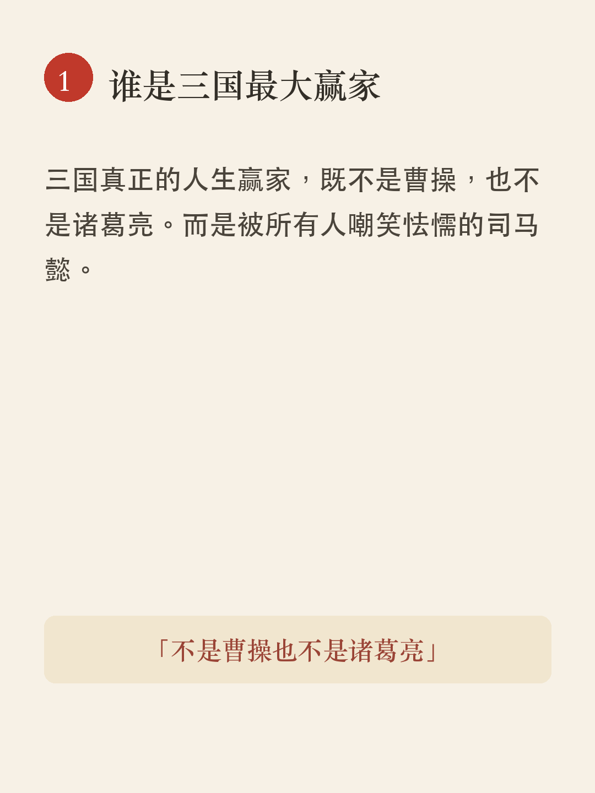
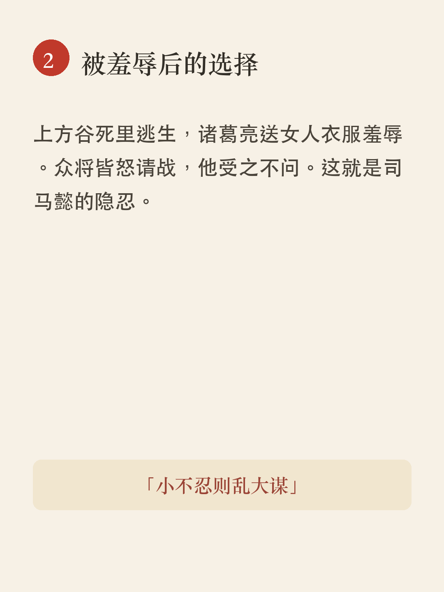
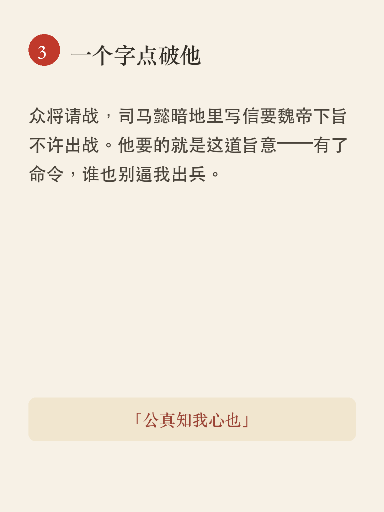
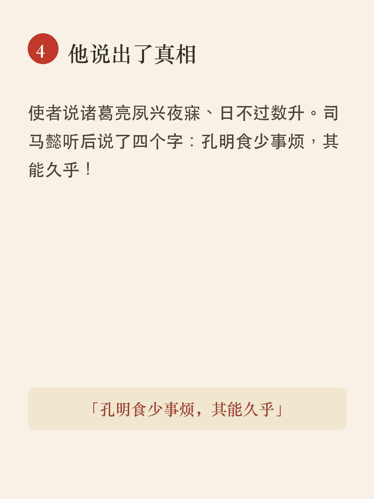
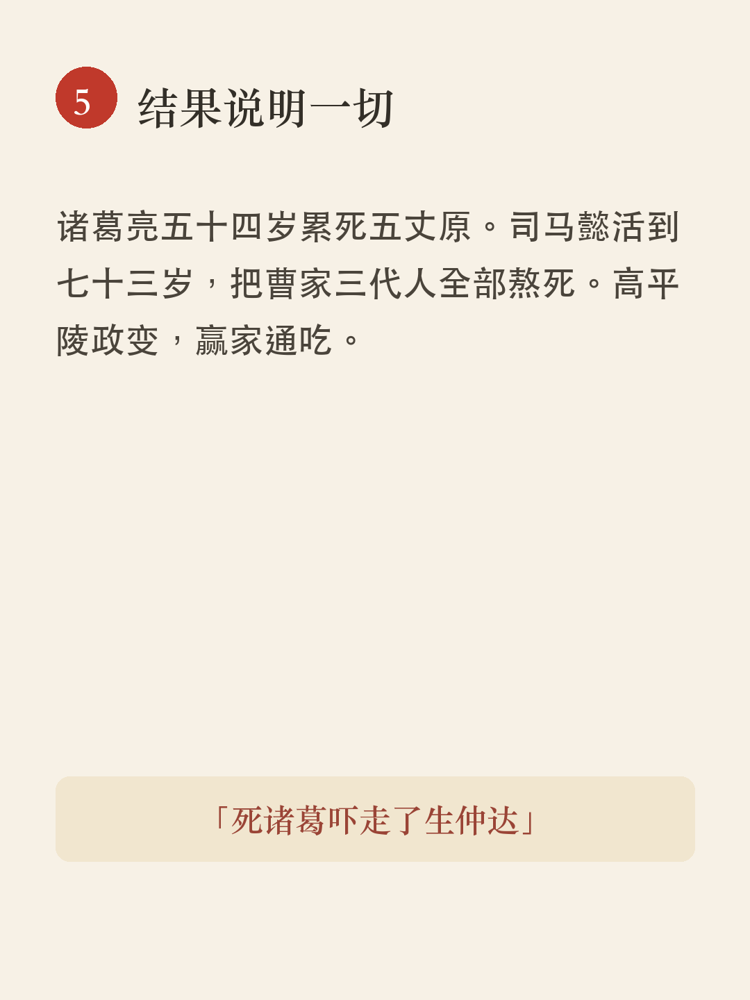
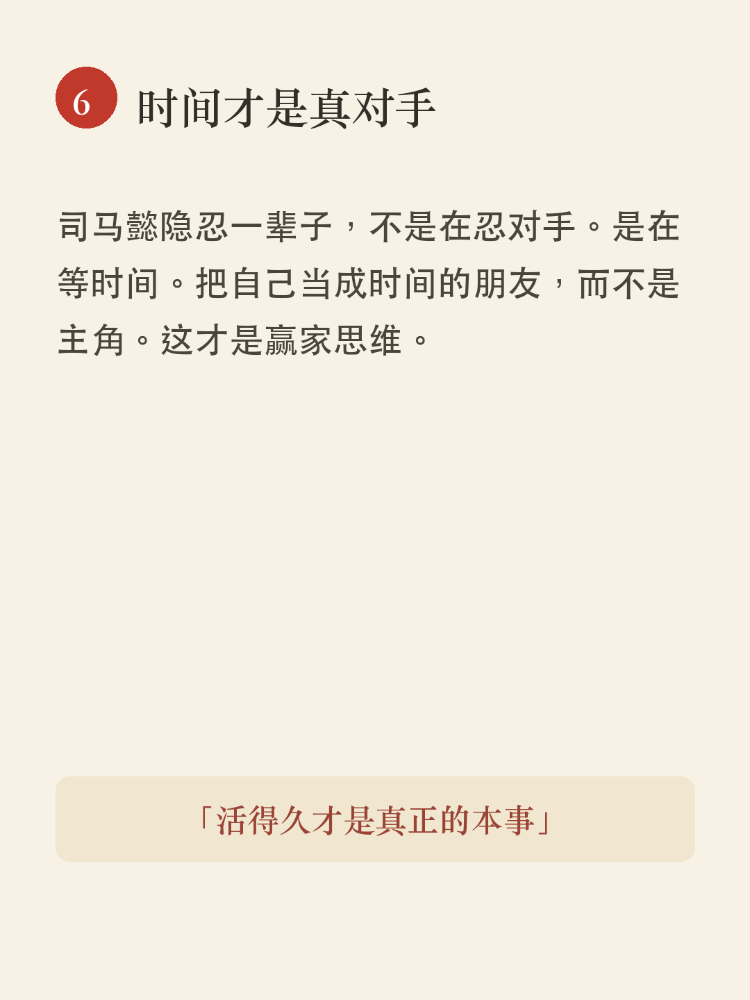
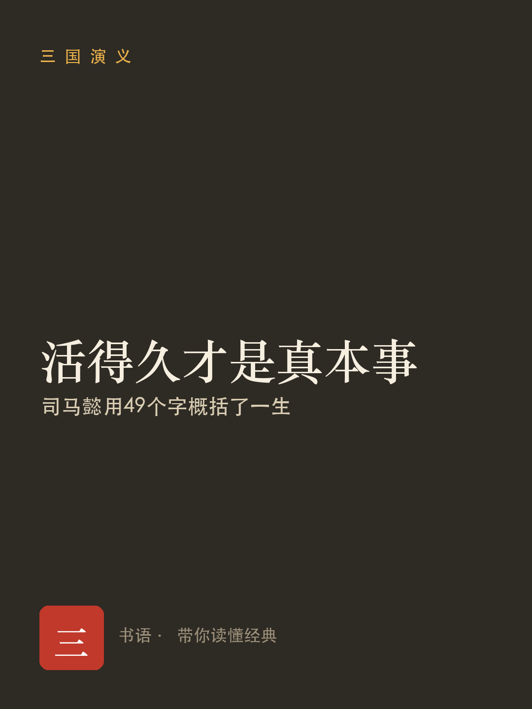
口播稿全文
你知道吗？三国真正的人生赢家，既不是曹操，也不是诸葛亮。
是那个被所有人嘲笑怯懦、被诸葛亮送女人衣服羞辱、却始终不肯出战的——司马懿。
上方谷那场火，烧得多旺啊。诸葛亮把司马懿引进山谷，地雷一齐突出，草房内干柴都着，刮刮杂杂。司马懿惊得手
足无措，下马抱两个儿子大哭说：“我父子三人皆死于此处矣！”
结果呢？天降大雨，火不能着。司马懿捡回一条命。
但真正让他赢的，不是那场雨。
是他在那之后的选择。
诸葛亮送了一套巾帼妇人的衣服给他，羞辱他像个女人。众将都怒了，请求出战。司马懿呢？他看完信，心中大怒，却佯笑说：“孔明视我为妇人耶？”然后受之，重待来使。
他甚至还问使者：“丞相寝食及事之烦简若何？”
使者说：“丞相夙兴夜寐，罚二十以上皆亲览焉。所啖之食，日不过数升。”
司马懿回头对诸将说了一句话：“孔明食少事烦，其能久乎！”
这句话什么意思？——诸葛亮吃不下饭，事情却堆成山，他撑不了多久了。
你看，他早就算清楚了。
诸葛亮五出祁山，累死在五丈原。而司马懿呢？在那场大雨之后，他做了一个所有人都没想到的决定：继续龟缩，坚守不出。
众将请战，他说：“小不忍则乱大谋。”
然后他写信给魏帝，说自己被女人衣服羞辱了，要出战。魏帝派辛毗持节传谕：谁也不许出战。司马懿暗地里对辛毗说了一句话：“公真知我心也。”
什么意思？他根本不想战。他要的就是这道旨意——有了皇帝的命令，将士们再也没有理由逼他出兵了。
你发现没？这就是司马懿真正的本事。
他不是打不过诸葛亮。他是在等。等什么？等时间。
上方谷那场火，老天救了他一命。但老天救得了他一次，救不了诸葛亮一辈子。
诸葛亮食少事烦，事必躬亲，连处罚二十下这种小事都要亲自过问。主簿杨顒劝他：“丞相亲理细事，汗流终日，岂不劳乎？”他说：“吾非不知，但受先帝托孤之重，惟恐他人不似我尽心也！”
你看，他累死自己，也不肯放手。
结果呢？诸葛亮死在了五丈原。而司马懿活了下来。
后来蜀兵撤退，司马懿追上去，看到车上坐着诸葛亮——其实是木头做的。他大惊失色，拔腿就跑。魏兵魂飞魄散，弃甲丢盔，司马懿奔走了五十余里才停下来说：“我有头否？”
死诸葛吓走了生仲达。
但那又怎样？
诸葛亮赢了那一场，却输掉了整局棋。
司马懿输了面子，却赢了最后的天下。
诸葛亮死的时候五十四岁。司马懿呢？活到七十三岁。
这十九年，够他把曹家三代人全部熬死，然后发动高平陵政变，把权力全部收入囊中。
你以为他隐忍一辈子是在忍什么？忍诸葛亮？忍那些骂他怯懦的将领？
不是的。他忍的是时间。
他比谁都清楚：在权力场上，不在于你多强，而在于你活多久。
你再厉害，也会犯错。你再聪明，也会衰老。但只要你还在牌桌上，就永远有机会。
司马懿用的，就是这个逻辑。
诸葛亮日理万机，鞠躬尽瘁，死而后已。司马懿呢？他让魏帝下旨不许出战，自己躲在营里种豆子，和诸将在辕门射戏。众将都以为他怕了。只有他自己知道，怕什么？
他怕的是赢了一场战役，输掉了整个战争。
所以他宁可被骂懦夫，也要等。等诸葛亮累死，等蜀汉后继无人，等自己把所有的对手都熬进棺材。
最后那把火，是留给儿子去点的。
你再看看现在的职场和官场，有多少人输在“忍不住”三个字上？
看到机会就冲，不顾一切。觉得自己最强，非要证明给别人看。扛着所有的事，不肯放手，不敢休息。
结果呢？能力撑不起野心，身体撑不住压力，等到撑不住的那一天，位置就空了。
而那个一直在场、一直在等、一直在积累的人，顺势就接上了。
活得久，才是真正的本事。
不是因为活得久就一定能赢。而是活得久的人，往往做对了最重要的一件事——
他们没有把自己当成主角，而是把自己当成了时间的朋友。
司马懿不是三国最强的谋士，但他是最懂活着的人。
诸葛亮赢了名声，司马懿赢了天下。
你选哪个？
85人物thread公版关羽：忠义是优点，也是送命的刀
🎬 关羽被尊为武圣，但读懂他的一生你会发现——他的优点最后全部变成了杀死他的武器。
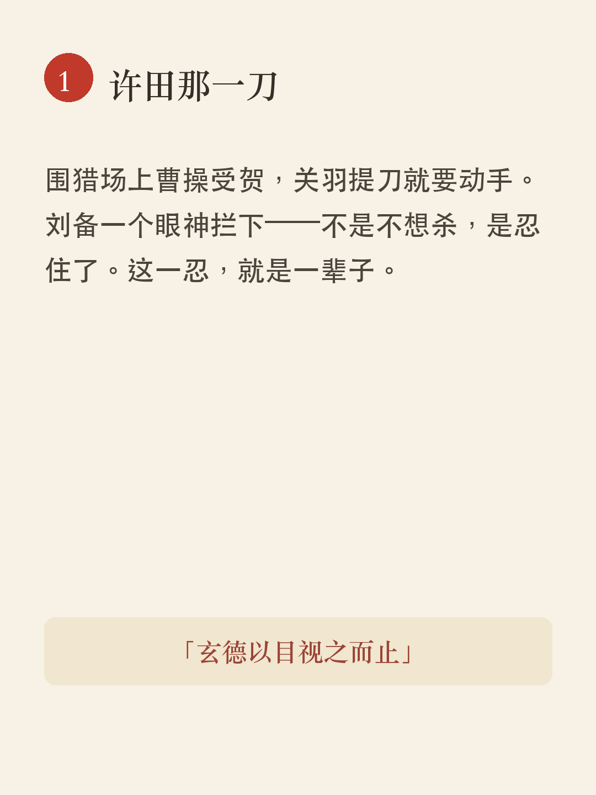
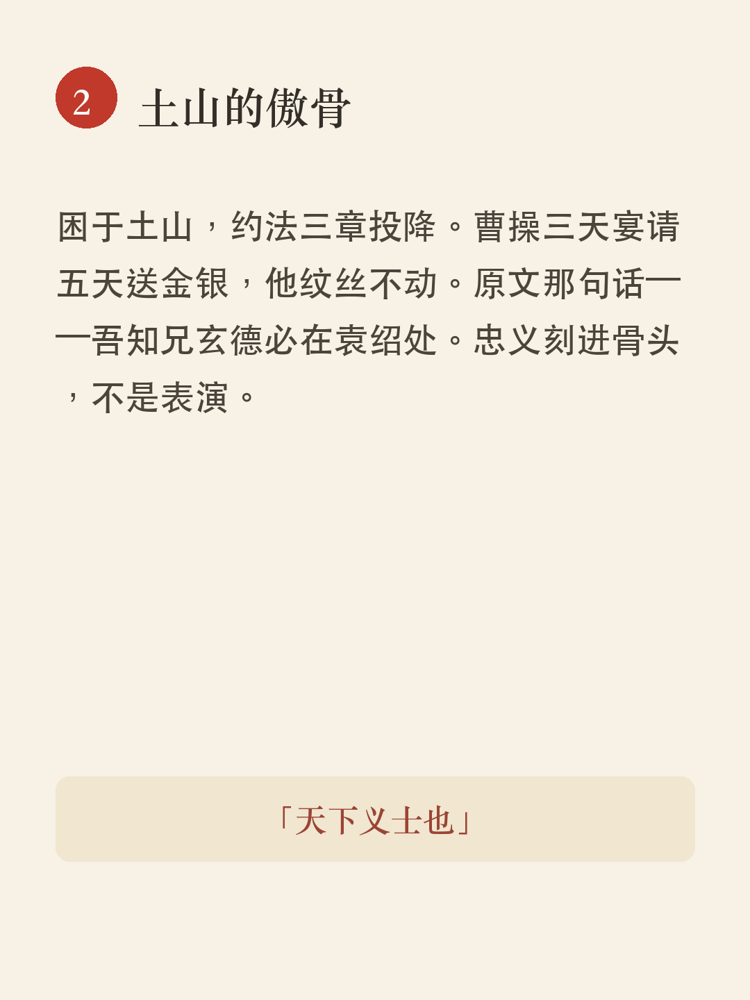
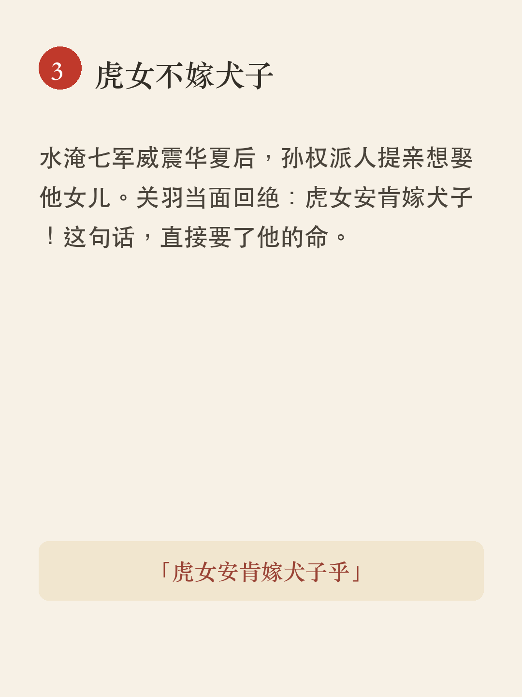
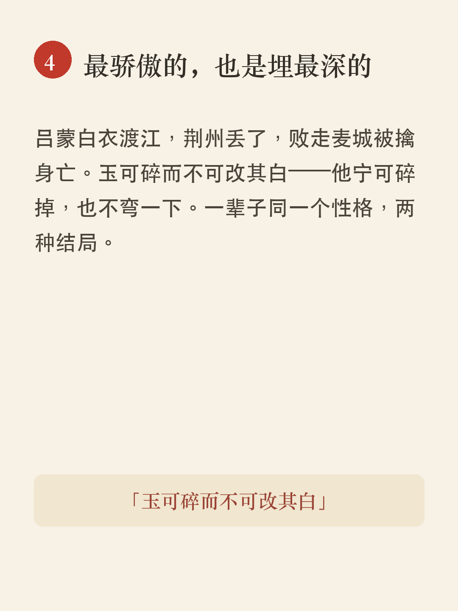
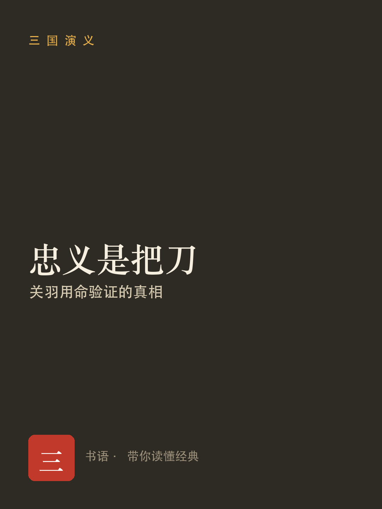
口播稿全文
关公关二爷，被后世尊为武圣，庙里香火不断。可你读懂他这一生就会发现——他的优点，最后全部变成了杀死他的刀。
早年在许田围猎，曹操迎接受贺，关羽跟在刘备身后，提刀就要动手。被刘备一个眼神拦下。原文写的是“玄德以目视之而止”。他不是不想杀，是忍住了。这一忍，就是一辈子。
后来被困土山，约法三章投降曹操。曹操三天宴请，五天送美女金银，关羽纹丝不动。原文明明白白：“吾知兄玄德必在袁绍处。”他的忠义不是表演给谁看的，是刻进骨头里的。所以曹操才会感叹：“事君不忘其本，天下义士也。”
但也正是这份忠义，让他水淹七军威震华夏之后，拒绝了一个活命的机会——孙权派人来提亲，想让儿子娶他女儿。原文明写他的回答：“吾虎女安肯嫁犬子乎！”当面把孙权骂成狗。
这句话要了他的命。
孙权是什么人？坐断东南的江东之主。他可以不帮关羽，但他绝对不能忍一个"犬子"的羞辱。于是吕蒙白衣渡江，荆州丢了，关羽败走麦城，最后被擒身亡。
你说他图什么？他图的就是一口气。原文那句话我念给你听——“玉可碎而不可改其白”。他宁可碎掉，也不会弯一下。
忠义让他封神。傲慢让他走麦城。一辈子同一个性格，两种结局。
很多人说性格决定命运，但关二爷用自己的一生告诉你：性格不只是决定命运，性格就是命运本身。你最骄傲的东西，往往也是埋你最深的那个坑。
84洞见scene公版曹操和刘备，到底谁才是真英雄
🎬 曹操说天下只有他和刘备是英雄——但一千八百年后，我们对这个问题有了新答案。


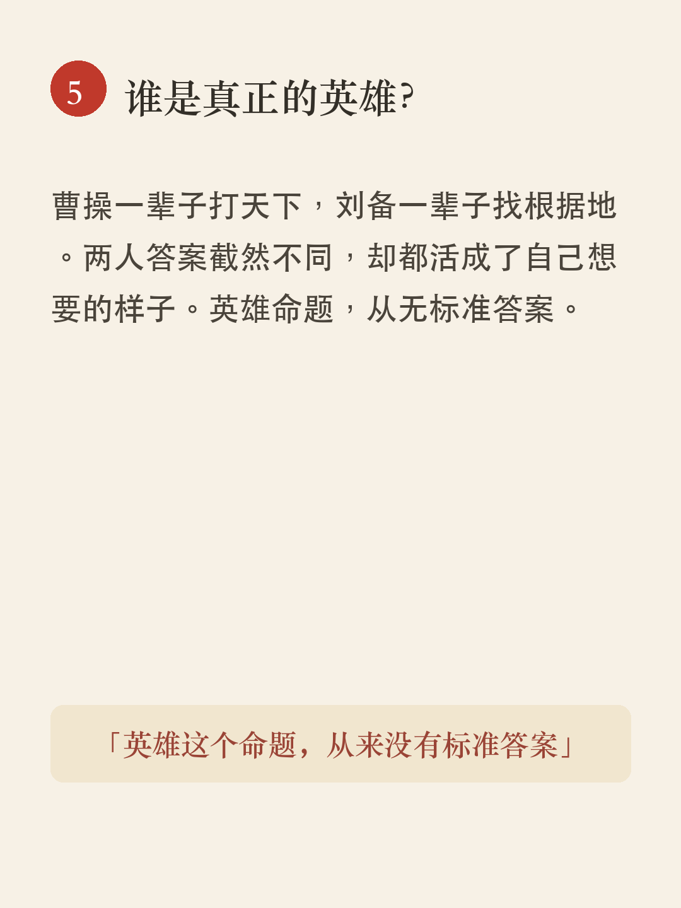

口播稿全文
公元二百年出头，曹操请刘备喝酒，就在那个小亭子里，摆着青梅，煮着酒，两个人对坐。
酒喝到一半，天边龙挂，曹操突然问刘备：知道龙的变化吗？刘备装傻说不知道。曹操说：龙能大能小，能升能隐，大则兴云吐雾，小则隐介藏形，升则飞腾宇宙，隐则潜伏波涛。龙乘时变化，犹人得志而纵横四海。
这话说完，曹操话锋一转：玄德，你走南闯北，一定知道当世英雄是谁吧？
刘备开始装傻，说自己肉眼哪能识得英雄。曹操说别谦虚。刘备就开始点名字：袁术兵粮足备，袁绍四世三公，刘表威镇九州，孙策借父之名，刘璋守着益州，张绣、张鲁、韩遂这些人……
曹操听完一个一个否：袁术是冢中枯骨，早晚必擒；袁绍色厉胆薄，好谋无断，干大事而惜身，见小利而忘命；刘表虚名无实；孙策借父之名；刘璋守户之犬；剩下那些碌碌小人，何足挂齿。
然后曹操给出了他的英雄定义——注意，这是原文：夫英雄者，胸怀大志，腹有良谋，有包藏宇宙之机，吞吐天地之志者也。
接着他手指刘备，再指自己：今天下英雄，惟使君与操耳。
就这一句话，刘备手里的筷子直接掉地上了。原文这四个字——吃了一惊，手中所执匙箸，不觉落于地下。
这时候正好雷声大作，刘备弯腰捡筷子说：一震之威，乃至于此。曹操笑着说，大丈夫也怕雷吗？刘备说圣人迅雷风烈必变，安得不畏？就这么轻轻掩饰过去了。
但刘备自己心里清楚，曹操这是在试探他。他后来说：我学圃种菜，就是要让曹操知道我胸无大志，没想到他竟然指我为英雄，我故意失惊落箸，又借惧雷来掩饰。
你看，这才是煮酒论英雄真正的玄机——曹操不是真心夸刘备，是在给他挖坑。而刘备能全身而退，靠的不是运气，是他把自己活成了龙。
一千八百年了，我们回头看这两个人，曹操说英雄要胸怀大志腹有良谋，他自己确实做到了，挟天子令诸侯，官渡一把火把袁绍烧趴下，青梅煮酒的时候他已经是半个北方的主人。
可刘备呢？青梅煮酒的时候他在干什么？在后园种菜，亲手浇灌。曹操问他天下谁是英雄，他装傻充愣数了一圈人，连张绣这种都拿出来凑数。他明明知道自己是龙，但他选择做一条潜伏的龙。
所以你问谁是英雄？
曹操的英雄，是飞龙在天，是吞吐天地，是我不做英雄谁做英雄。
刘备的英雄，是潜龙勿用，是隐介藏形，是我知道我是英雄，但我要让你觉得我不是。
这两种活法，没有对错。但有一点很有趣——曹操一辈子都在打天下，刘备一辈子都在找根据地，曹操靠的是自己多智多谋，刘备靠的是自己会演。
公元二百二十三年，刘备病死白帝城。曹操死了二十九年。曹魏最后篡了汉，蜀汉也亡了。那顿青梅煮酒，到底谁是真正的英雄？
也许都不是。也许都是。
英雄这个命题，从来没有标准答案。
83映照scene公版刘备携民渡江：道义值多少钱
🎬 曹操追兵在后，刘备带着十万百姓慢慢走——这是圣人还是傻子？


口播稿全文
曹操的追兵就在身后，刘备带着十万百姓，慢悠悠地往江陵走。每天走十几里路，而曹操的铁骑，一天一夜就能追上来。
你说他傻不傻？
手下的将领都急了，说咱们赶紧扔下百姓先跑吧，留得青山在。但刘备说了一句话，原文里写得清清楚楚——**举大事者必以人为本，今人归我，奈何弃之？**
翻译过来就是：干大事的人靠的是人心。现在老百姓愿意跟着我，我怎么忍心丢下他们？
这句话说出来容易，做起来是要命的。
原文里有一段，我每次读到都觉得心里堵得慌。刘备坐在船上，看着岸上那些没来得及过河的百姓，望南痛哭。他居然想投江去死，被身边的人拦下来。你想想那画面——一个四十多岁的男人，眼睁睁看着跟了自己一路的老百姓在哭，他想的是，我一个人活着有什么意思。
这是什么？这不是表演，这是真性情。
后来曹操追上来了，在当阳长坂坡杀得血流成河。刘备的军队几乎全军覆没，老婆孩子都差点丢了。赵云在乱军里七进七出，就是为了救他那个儿子。糜夫人为了不拖累赵云，投井而死。
代价惨不惨？太惨了。
但你再往后看。赤壁之战，孙权为什么要跟刘备联合？因为鲁肃说了句话——众人皆可降曹操，唯将军不可降曹操。为什么？因为将军降了，最多封个侯，坐个马车，身边几个人，凭什么跟曹操平起平坐？但刘备不一样，他是那些人的指望。
说到底，刘备赢的，从来不是兵多将广。他赢的是人心。
回到开头那个问题——道义值多少钱？
有人说，道义是最大的利益。得人心者得天下，放弃道义的成本，比坚守道义还要高。也有人说，道理是道理，现实是现实，危急时刻顾不上那些。
都对。但我想说一件事——
刘备不是不知道风险。他手下那些谋士精得很，诸葛亮、关羽、张飞、赵云，没有一个是傻子。如果刘备的决定真的是纯傻，早就有人拦住了。
他没有。
因为他心里清楚，扔下百姓跑路，或许能活，但那就不是刘备了。一个人的道义，不是他顺风时说出来的漂亮话，而是他在生死关头真正愿意承受的代价。
所以道义值多少钱？
对刘备来说，无价。
对你我来说呢？
83人物thread公版曹操：被误解最深的真实
🎬 被骂了一千八百年的奸雄，其实做对了三件事——件件戳中现代人的痛点。
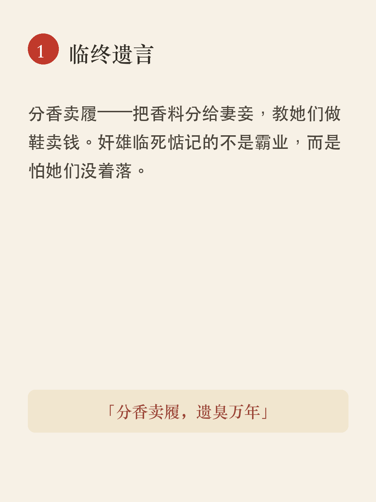
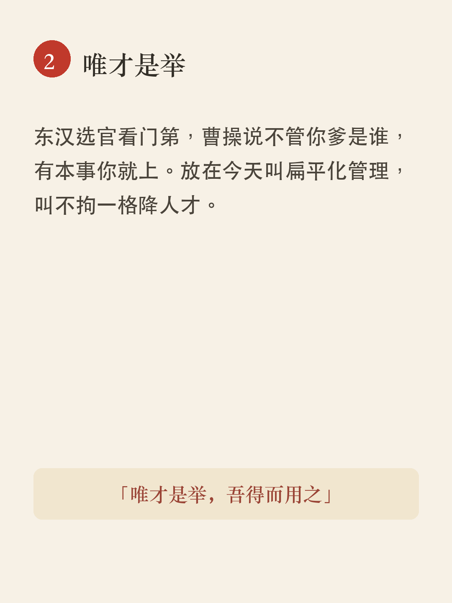
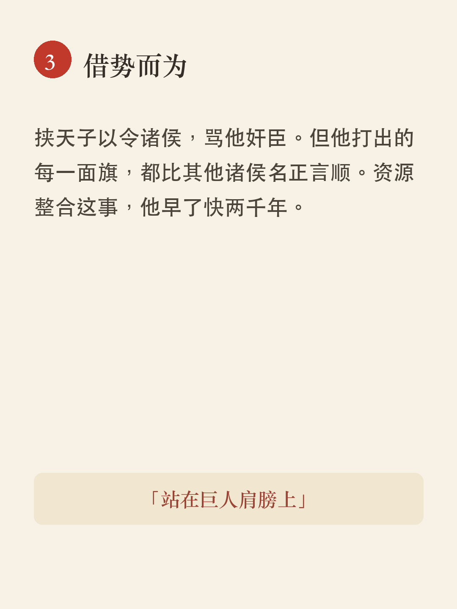
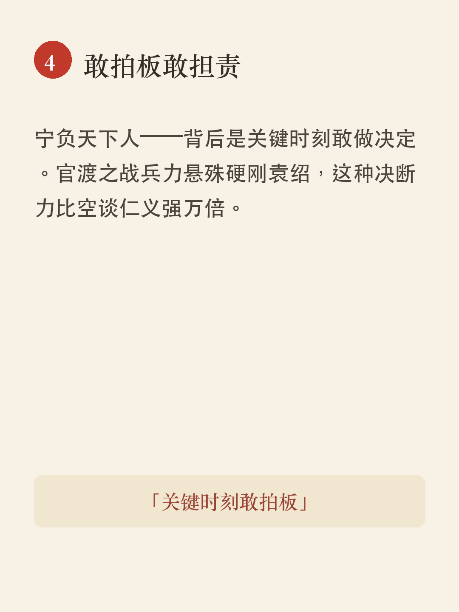
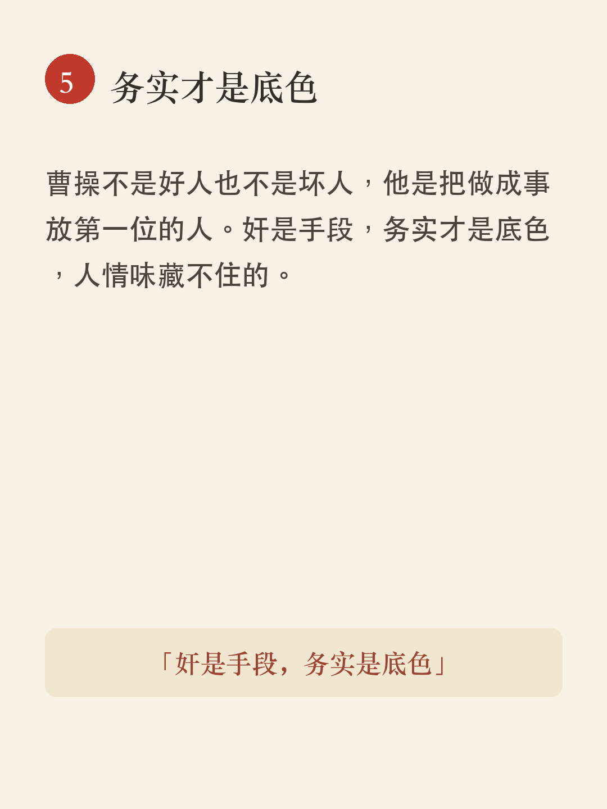
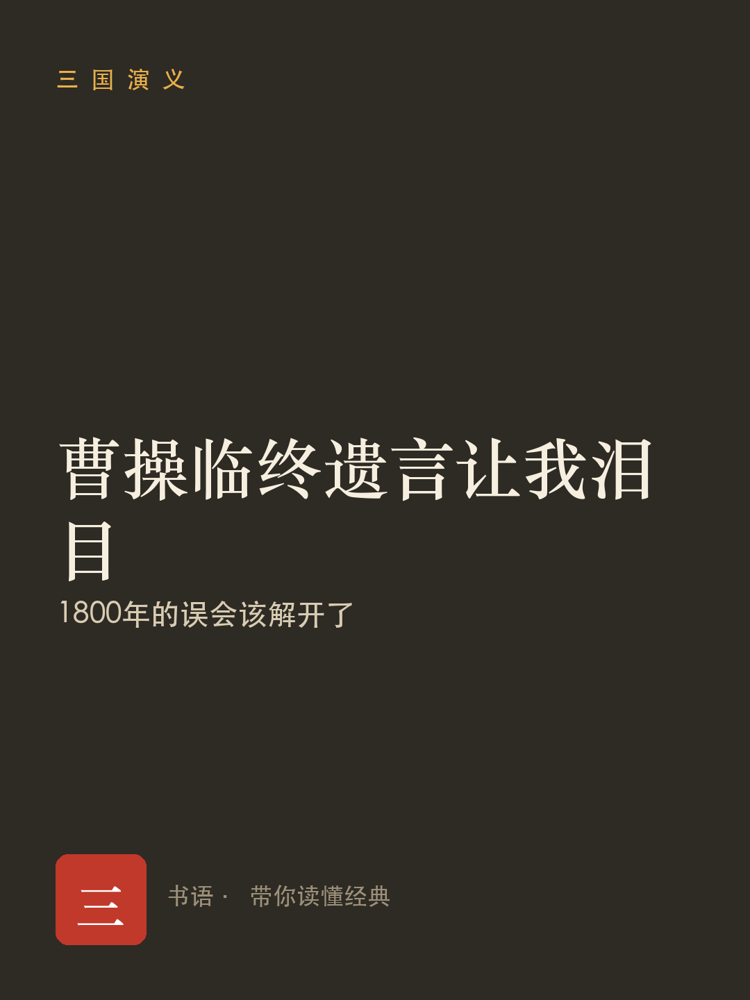
口播稿全文
你一定听说过这句话——宁教我负天下人，休教天下人负我。
这句话让曹操背了一千八百年的骂名。但今天我想告诉你，你可能误解他了。
曹操临死前说的最后一句话是：分香卖履。就是把自己珍藏的香料分给妻妾，让她们学做鞋子卖钱度日。
一个奸雄，弥留之际惦记的不是江山霸业，而是怕自己死后妻妾们没着落——这反差，大不大？
所以曹操这个人，不能用好人坏人来定义。他是一个极度务实的人，他的“奸”，其实是手段，不是目的。
你去看他的三个选择，每一步都踩在现代人的痛点上。
第一，唯才是举。东汉选官看门第看关系，曹操说“唯才是举，吾得而用之”，不管你爹是谁，有本事你就上。这在当时，简直是革命性的用人哲学。放到今天叫什么？叫扁平化管理，叫不拘一格降人才。曹操的账下谋士如云猛将如雨，不是没有原因的。
第二，挟天子以令诸侯。有人骂他奸臣，当皇帝的金字招牌自己用。但他打出的每一面旗，都比其他诸侯名正言顺。放到今天叫什么？叫借势而为，叫站在巨人的肩膀上。资源整合这事，曹操玩得比大多数人早了快两千年。
第三，宁负天下人。这句话争议最大。但你仔细想想，这话的背后是什么？是关键时刻敢拍板，敢担责，敢做决定。官渡之战，曹操敢在兵力悬殊的情况下硬刚袁绍；用人失误，他认了然后换人。这种决断力，比那些满口仁义道德关键时刻缩头的人，强一万倍。
所以曹操不是好人，也不是坏人。他是那种把“做成事”放在第一位的人。他的奸，是手段；他的务实，才是底色。
这可能就是罗贯中写到最后，为什么让这个“奸雄”临终时牵挂的是分香卖履——一个心里只有江山的人，藏不住这点人情味的。
82映照scene公版周瑜临死一句话，说破嫉妒的本质
🎬 周瑜临死前喊了一句话，揭示了一个人最loser的时刻是什么样子。


口播稿全文
周瑜死的时候，喊了一句话。
不是“皇天不负有心人”，不是“壮志未酬身先死”。他说的是：“既生瑜，何生亮？”
这六个字，是中国历史上最扎心的一句临终遗言。
你想想，一个人活到快断气的时候，最后想的不是妻儿，不是家业，而是对手的名字——诸葛亮。他恨的不是自己不够强，是老天为什么要造出这么一个人来。
周瑜什么出身？世家大族，少年得志，二十岁出头就做了吴国的大都督，赤壁之战一把火烧了曹操八十万大军，那是中国历史上以少胜多的天花板。论才华，论地位，论容貌，论人脉，周瑜放到哪个时代都是顶流。
可他就是过不去诸葛亮这道坎。
诸葛亮借东风，他气得箭疮崩裂。诸葛亮取了荆州，他恨不得生啖其肉。他设美人计、设假途灭虢之计，三番五次要取荆州，哪一计不是精心布局？结果呢？计计被诸葛亮看穿，堂堂东吴大都督，被一个村夫玩得团团转。
最可怕的是，周瑜不是输在能力上。
他是输在心态上。
他容不得有人比他强。他的骄傲不是“我要更好”，而是“你凭什么比我好”。这种心态，比输掉一场仗更致命。
反观诸葛亮，周瑜气他气成这样，诸葛亮做了什么？从来没主动挑衅过，甚至在周瑜死后，还亲自去吊孝，哭得比东吴的臣子还伤心。为什么？因为在诸葛亮眼里，周瑜从来不是敌人，只是一个可惜的对手。
两个人棋逢对手，一个心态崩了，一个稳如磐石。
你说谁赢了？
我见过太多人，不是被对手打倒的，是被自己的心态打倒的。别人升职了，他咬着牙说“有什么了不起”；同事项目成功了，他在背后说“那是运气”；朋友日子越过越好，他酸得能腌咸菜。
这种心态，短期内伤别人，长期内毁自己。因为你所有精力都用来跟别人较劲了，没有一秒钟留给自己成长。
周瑜如果能放下那句“何生亮”，专心做他的东吴大都督，三国的故事可能完全不一样。
可惜没有如果。
临死那一刻，他喊出的是对手的名字，不是自己的名字。这就是一个男人最loser的时刻——活了一辈子，到头来，心里装的是别人，不是自己。
你要是还为谁比你强这件事睡不着觉，想想周瑜。
他那么牛，都没能赢过自己的心魔。
80洞见scene公版分久必合：历史是个圈
🎬 三国的故事用一个词就能概括，可惜没人愿意相信。


口播稿全文
三国最精彩的是什么？英雄？谋略？战争？都不是。最核心的只有四个字，偏偏没人愿意相信。
《三国演义》第一回，开篇就写了这么一句：“话说天下大势，分久必合，合久必分。”就这么八个字，周朝末年七国分争，最后并入秦朝；秦朝灭亡后楚汉相争，又并入汉朝；汉高祖斩白蛇起义统一天下，光武中兴传到献帝，又分成了三国。这个规律，从周朝到汉朝，一直重复。
但这个规律为什么没人愿意相信？因为人总觉得历史在进步。秦到汉是进步，汉到三国是退步，三国到今天是发展。但你仔细看，权力结构、利益逻辑、人性，哪一样变过？分分合合，就像春夏秋冬，冬天过后是春天，春天过后又是冬天，这是天道。
放到今天的中美博弈，你就明白了。苏联解体，美国独大，一超多强，那时候有人说历史终结了，三十年过去，中国崛起，多极化格局又出现了。不是谁进步谁退步，是历史在重演。罗马帝国、奥斯曼帝国、蒙古帝国、日不落帝国，所有大国的兴衰，都在这个圈里。
看懂了这一点，你就不会对现在的大国竞争感到焦虑，也不会盲目乐观。历史不会直线上升，也不会突然崩塌，它只是在分分合合中循环。读懂这个规律，你就能更从容地面对当下。
滚滚长江东逝水，浪花淘尽英雄，是非成败转头空，青山依旧在，几度夕阳红。三国用最精彩的故事，讲了一个最简单的道理——分分合合，这就是天道。
78故事scene公版上方谷那场雨，改写了三国历史
🎬 诸葛亮把司马懿烧得只剩一口气——然后天降大雨，司马懿跑了。


口播稿全文
你知道吗？三国最残忍的一场戏，不是刀光剑影，不是血肉横飞，而是一场雨。
上方谷，葫芦形，口小肚子大，四面环山，只通一人一骑。诸葛亮看中的就是这个地形。他在谷里堆满干柴，埋下地雷，又让魏延把司马懿往死里引。三路人马配合得天衣无缝，司马懿中计了，追进谷里才发现：完了，退路断了。
火箭射下，地雷齐炸，草房全着了。火势冲天，浓烟滚滚，整个山谷变成一座巨大的火炉。司马懿摔下马，抱着两个儿子放声大哭，说了一句话——原文里写的是“我父子三人皆死于此处矣”。
你注意这个细节啊，不是“我等”，是“父子三人”。临死之前，他的眼泪不是为国家、为江山，是为这两个孩子。
火越烧越大，司马懿已经闭上眼等死了。
然后——
狂风大作，黑气漫空，一声霹雳，骤雨倾盆。
满谷的火，一浇就灭。地雷震不响，火箭射不着。火不能着。
司马懿睁开眼，大喜过望，带着儿子从火里爬出来，杀出重围，逃了。
诸葛亮在山上看着这一切。原文写：“孔明心中甚喜，以为司马懿此番必死。不期天降大雨，火不能着，哨马报说司马懿父子俱逃去了。”
甚喜。
他以为是必死的。
然后，他只说了一句话——“谋事在人，成事在天。不可强也！”
就这一句，你品。
火烧司马懿那场仗，诸葛亮算到了每一个细节：地形、引诱、火药、引线、退路封锁、伏兵接应。唯一没算到的是什么？雨。
这场雨，《三国演义》里没有铺垫，没有预兆，没有任何一个人、一本书、一次夜观天象提到过它会来。它就是凭空而降，偏偏就在司马懿只剩一口气的时候。
你说这是巧合吗？
诸葛亮在五丈原上夜观星象，能算出自己命在旦夕；能借东风，能布八卦阵，能驱六丁六甲，可他算不出上方谷这一场雨。
所以他才说“不可强也”。
不是谦辞，是真的认了。
我见过很多人，用尽全力，把所有能做的做到极致，最后输在了一个完全意想不到的地方。那个地方不叫能力不够，叫“天意”。
上方谷这场雨，是整本《三国演义》里最残酷的隐喻——
你什么都算到了，就是算不到老天。
而老天从来不跟你打招呼。
75故事scene公版三顾茅庐：诚意到底值多少钱
🎬 一个人去找另一个人，前两次都被赶出来——第三次，他成了皇帝。


口播稿全文
一个人去找另一个人，前两次都扑空了——第三次，他成了皇帝。
这不是什么鸡汤故事。
这是刘备请诸葛亮出山。
你可能觉得，不就是三顾茅庐吗？诚意嘛，坚持就是胜利。
但我告诉你，你可能根本没看懂这个故事。
公元207年冬天，刘备47岁，寄居在新野小县，手下有关羽张飞，带着几千人马，随时可能被曹操灭掉。他听说南阳有个隐士叫诸葛亮，人称卧龙先生，"有经天纬地之才"。徐庶走之前跟他说，这个人你要是能得到，"无异周得吕望、汉得张良"。司马徽更是直接说，"可比兴周八百年之姜子牙，旺汉四百年之张子房"。
就这种人，刘备去了。
第一次，大雪纷飞。刘备到了草庐，童子说先生不在，出去了，"归期亦不定，或三五日，或十数日"。刘备怅然而返。
第二次，还是大雪。风寒地冻，张飞都说"天寒地冻，尚不用兵，岂宜远见无益之人乎？不如回新野以避风雪"。刘备说什么？"吾正欲使孔明知我殷勤之意。如弟辈怕冷，可先回去。"到了草庐，又没见到诸葛亮本人，只见到他弟弟诸葛均，留下了一封信。然后又在风雪中离开。后人写诗说"一天风雪访贤良，不遇空回意感伤"。
第三次，关羽都看不下去了，说"兄何惑於斯人之甚也"。张飞更直接，说"只用一个麻绳缚将来"。刘备怎么说的？他搬出了齐桓公——"昔齐桓公欲见东郭野人，五反而方得一面。况吾欲见大贤耶？"
第三次到了草庐，诸葛亮在睡觉。刘备怎么做？他在阶下站着，等。一个时辰，两个时辰，关羽张飞在外面等得火冒三丈，张飞要去放火烧房子，被关羽劝住。刘备呢？"且勿惊动"，继续等。
直到诸葛亮睡醒，翻身问童子："有俗客来否？"
这时候刘备才上前。
然后诸葛亮给他分析了天下大势，提出了那个改变中国历史的战略——先取荆州为家，后取西川建基业，以成鼎足之势，然后图中原。这就是著名的隆中对。
说完这个，诸葛亮怎么表态的？"亮久乐耕锄，懒于应世，不能奉命。"刘备当时就哭了——原文写"玄德泣曰：'先生不出，如苍生何？'"眼泪把袖子都沾湿了。
就这一句，诸葛亮被打动了。他说："将军既不相弃，愿效犬马之劳。"
你看出什么没有？
诚意从来不是傻等。
诚意是——当所有人都觉得你不值得，当你连见一面都见不到，当你第二次扑空在风雪里，当你连童子都记不住你名字的时候，你依然选择继续去。
刘备不是没有退路。他可以等曹操来招揽，可以投靠孙权，可以安心当个县令。但他选择了在最冷的冬天、最难的时候，去找一个素未谋面的人，因为他知道，只有这个人能帮他成就大业。
这不是讨好，这是判断力加上行动力。
诸葛亮出山之后，刘备怎么待他的？"食则同桌，寝则同榻，终日共论天下之事"。后来曹操派夏侯惇带十万大军来打，关羽张飞都跃跃欲试，张飞还问"可着孔明前去迎敌便了"。刘备说什么？"智赖孔明，勇须二弟，何可推诿？"
一个47岁的人，在最落魄的时候，愿意把后背交给一个27岁的年轻人。这不是傻，是格局。
三顾茅庐的本质，不是刘备用诚意感动了诸葛亮。
是一个快走投无路的人，用他最后的机会和全部的诚意，证明了自己值得被托付。
所以你说诚意值多少钱？
它值三分天下。
它值一个帝业。
它值你愿意在最冷的冬天，站一个时辰的背影。
68冷知识scene公版周瑜其实不是被气死的
🎬 罗贯中骗了你一千多年——周瑜到底是怎么死的？


口播稿全文
罗贯中骗了你一千多年——周瑜根本不是被气死的。
看过《三国演义》的人都知道那句名言，"既生瑜，何生亮"。周瑜三番五次被诸葛亮算计，最后被活活气死，临死前还在仰天长叹。这段故事太精彩了，以至于所有人都信了。
但你翻开正史一看，完全不是这么回事。
根据《三国志》记载，周瑜是病死在征途上的。他年纪轻轻就带兵打仗，南征北战，身体早就熬坏了。他死的时候才三十六岁，死因是积劳成疾，一病不起。哪有什么三气周瑜？哪有什么仰天长叹？根本就没有这回事。
罗贯中为什么要这么写？因为好看。真实的周瑜病死军中，有什么戏剧性？写成被诸葛亮气死，那才叫大快人心。你看，周瑜聪明吧？诸葛亮更聪明；周瑜厉害吧？诸葛亮料事如神。把周瑜写成输家，写成小心眼，写成被活活气死，诸葛亮的光环才更亮。
但这就带来一个问题——我们脑子里那个心胸狭窄、嫉妒成性的周瑜，其实是小说家精心设计的人设。真实的周瑜，是东吴最年轻的统帅，赤壁之战真正的前线指挥者，苏轼笔下"谈笑间，樯橹灰飞烟灭"的那个周瑜。
演义和史实的差距，有时候比三国还乱。
书语 · Quick 短视频评审 · 内部 · noindex